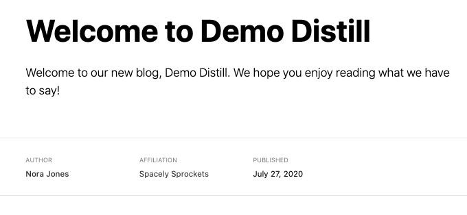

> distill::create_blog(dir = "demo-distill", title = "Demo Distill")
Creating website directory demo-distill
Creating demo-distill/_site.yml
Creating demo-distill/index.Rmd
Creating demo-distill/about.Rmd
Creating demo-distill/_posts/welcome/welcome.Rmd
distill
distill is “Scientific and technical writing, native to the web”. I’ve gotten lots of requests for creating a distill blog from scratch, so I’ve finally gotten around to building that!
Please note that the docs for distill are already excellent, check them out at: Distill: Creating a Blog. This guide is aimed more at the end-to-end process of creating your first blog.
The first blog is typically the hardest and I’ve lived through the uncertainty of not really understanding how all the pieces work together. I appreciate the simplicity of distill for this very reason - there’s less stuff to change. At its core distill is just writing articles for a website/blog!
I also have owed this post to many people, namely Maëlle Salmon and JD Long as seen on my Twitter.
Why consider distill?
Pros
No Hugo dependency, no theme dependency, it’s a very stable format with the ability to customize just enough with a bit of effort. Think a self-hosted Medium.com in appearance. Very minimal, lightly themed, focused on writing and code! Again, I think that for someone getting started with creating websites or blogs it’s a very good starting point.
With distill you render/knit your articles locally, so you can quickly check your work without having to deploy to a git branch or to production. I do think that eventually it is a good idea to have git branches for previews or collaboration, but that’s a lot to ask for an initial first stab at a blog/site.
distill also natively supports citations, footnotes and asides, a rich auto-generated table of contents, support for HTMLwidgets and/or custom javascript, and a reader friendly typography that is mobile friendly/auto-adapts to mobile.
Another nicety is the ability to import a post with import_post(). This means you can take an existing blogpost from another website and import it into your new blog. This “does not require the original R Markdown document used to author the post—you only need access to the published HTML of a post to import it.”
Lastly, I am always amazed at the power of both blogdown and the more recent hugodown, but you are still relying on a changing version of Hugo and your theme over time. For a personal blog I personally prefer distill because I can get busy, neglect my blog for a year, come back to write a new post, and it still just works.
Cons
However, blogdown and hugodown allow dramatically more customization. distill is truly an opinionated framework, and most of the easy customization you can do is fonts, colors, and the navbar. If you expect to create gorgeous custom-layout sites like education.rstudio.com or something like Desirée de Leon’s blog you’re likely going to be disappointed!
Again, for my blog I really just wanted a simple but in my opinion elegant minimalist theme, so I was fine with the tradeoff, as I would have built something similar with blogdown anyway!
blogdown also supports other static site generators like Jekyll in place of Hugo, and a rich set of pre-built themes across the various generators. The structure of the site is extensible as well, so you can generate a site that truly looks like your own creation.
Lastly, note that you DO lose some niceties like hugo shortcodes for embedding, and again there is ONLY ONE THEME. Most appearance customization is done at the level of custom CSS.
If you’re still with me, here’s how to make it!
Steps to create
Step 1: Install distill
install.packages("distill”)
Step 2: New project from distill blog
What this is really doing is running the following command, and generates the output below.
This will create a home-directory titled whatever you passed for the dir argument above, so in our case “demo-distill”. This will contain the _site.yml, the about.rmd file, the index.rmd file, and two folders: _posts and _site. You should definitely change the dir and title arguments to whatever you want your site to be named, although you can edit this later with a bit of work.
While you’re welcome to explore _site I consider it something you SHOULD NOT edit by hand and it will commonly get overridden by rebuilding posts or the whole site. _site is essentially where the built site lives as final HTML and other supporting files. The _posts folder on the other hand contains all the raw RMDs you will use to create posts.
Step 3: Preview
At this point the website is technically built! You can “preview” the site by going to:_site -> index.html
The index.html is essentially the home page for your blog. You can navigate from there in either the RStudio viewer or send it to a web browser just like a normal webpage.
Note: you can also use the Build Website button in RStudio to pull up the whole website. This will re-knit and build the entire site from scratch.

Step 4: _site.yml
The _site.yml is where you control the overall details about your blog such as the name, title, description, and the navbar. You can add new “tabs” by changing the _site.yml file, where the default has a navbar with the site name on the left and a “Home” and “About” Tab on the right.
name: "demo-distill"
title: "Demo Distill"
description: |
Demo Distill
output_dir: "_site"
navbar:
right:
- text: "Home"
href: index.html
- text: "About"
href: about.html
output: distill::distill_articleStep 5: Example blog post
Navigate to _posts -> welcome -> welcome.rmd. This is the default “hello world” example that comes with you distill. Note you can delete that folder completely to drop it from the site, but let’s use it as a practice ground first.
This is still just a RMarkdown file, but it has a specific YAML header, that contains a title, a description, author, date, and outputs to distill::distill_article().
Try adding some more text, code, or other content to this blog post and then knit it! It will generate and show the final output in the RStudio viewer.
---
title: "Welcome to Demo Distill"
description: |
Welcome to our new blog, Demo Distill. We hope you enjoy
reading what we have to say!
author:
- name: Nora Jones
url: https://example.com/norajones
affiliation: Spacely Sprockets
affiliation_url: https://example.com/spacelysprokets
date: 07-27-2020
output:
distill::distill_article:
self_contained: false
---Step 6: New post
To create a new post, you can run the following command:distill::create_post("title of post")
Full arguments seen below! I’ll call out two specific things.
-
draftargument: this prevents the post from being included in the site build until you turn it toFALSE. This is useful if you’re working on a blogpost over time, or want to come back to finish it later.
-
date_prefix: this adds a date like2020-08-01-blog-postto the front of whatever yourblog-postname is. This is useful as it also creates a folder structure that sorts properly, and prevents name clashes.
Whenever you run the create_post() command it will generate a new folder and the basic RMarkdown doc to get started with the arguments you passed.
create_post(
title, # mandatory
author = "auto",
slug = "auto", # generates a website slug (URL)
date_prefix = TRUE, # adds date for sorting
draft = FALSE,
edit = interactive()
)
Note that a nice overview of the Blog Post Workflow is covered at the distill site. This includes collaborating via Git Branches (or using them as previews). I push to my main branch all the time since I’m working solo.
Step 7: Add to Git
We’re following instructions at: Chapter 17 Existing project, GitHub last | Happy Git and GitHub for the useR. If you’re a Git expert, feel free to use whatever method you like. From my experience setting up a few blogs this is the least painful if you’re NOT a Git expert.
You could also do the create GitHub and then connect it to RStudio route Chapter 17 Existing project, GitHub last | Happy Git and GitHub for the useR.
NOTE: if you don’t have a GitHub PAT, get one now by following these instructions B GitHub Personal Access Tokens | Happy Git and GitHub for the useR.
This will first use Git locally, and then create a new GitHub repo based off your existing local files.
Run the usethis::use_git() command, which will kick off some questions:
- Don’t commit just yet (Select
3: Not Now)
- Restart RStudio (Select
2: Yes)
You will know it all worked when you have the git logo at the top of RStudio

- Click on the Git logo and commit everything, notice we can’t push since we haven’t configured GitHub yet

-
usethis::use_github()— this works if you have already configured a GitHub Personal Access Token- Next select https if you don’t have SSH keys
- Say
1: yupto the title and description
- Next select https if you don’t have SSH keys
Example of what your console commands are and their output seen below!
> usethis::use_github()
✓ Setting active project to '/Users/thomasmock/demo-distill-blog'
✓ Checking that current branch is 'master'
Which git protocol to use? (enter 0 to exit)
1: ssh <-- presumes that you have set up ssh keys
2: https <-- choose this if you don't have ssh keys (or don't know if you do)
Selection: 2
● Tip: To suppress this menu in future, put
`options(usethis.protocol = "https")`
in your script or in a user- or project-level startup file, '.Rprofile'.
Call `usethis::edit_r_profile()` to open it for editing.
● Check title and description
Name: demo-distill-blog
Description:
Are title and description ok?
1: Yup
2: No way
3: Negative
Selection: 1
✓ Creating GitHub repository
✓ Setting remote 'origin' to 'https://github.com/jthomasmock/demo-distill-blog.git'
✓ Pushing 'master' branch to GitHub and setting remote tracking branch
✓ Opening URL 'https://github.com/jthomasmock/demo-distill-blog'Once this is all run, it should open up a new webpage with your fancy new GitHub repo! Mine opened at: GitHub - jthomasmock/demo-distill-blog.
Step 8: Netlify
Now that we have our files on Github, we’re ready to deploy via Netlify!
You’ll need to Create an account at netlify if you don’t have one already.
Once you’re logged in:
- First click on import from Git

- Click on
Configure netlify on GitHub, and follow their instructions to allow access, and then add the selected repository you want to send over (demo-distill-blog for me)- Click Save!

- Click on
demo-distill-blogor whatever your blog’s name is!
IMPORTANT
- Make sure to set the
Publish Directoryto_site(so Netlify can find the knitted HTML content)
- And then click deploy!

- You’ll get a fun temporary name (mine was https://confident-meitner-e6e7dc.netlify.app/). You can change this with the
Domain Settingstosome-name.netlify.appor even purchase a custom domain like I did for examplethemockup.blogor what Sharla Gelfand did withsharla.party.
Now your website should be up and running! If you don’t see a site (it 404s), then I would check to make sure you set the Publish Director to _site, otherwise it won’t know where to find the actual HTML content.
Step 9: Blog post workflows
Workflow difference: Furthermore, website pages and root pages of blogs are re-rendered when the site is rebuilt but blog articles are not. Each blog article has to be rendered on its own, with intent. Why? Given that R package upgrades have a tendency to break older code, continuously re-rendering old posts is nearly impossible to do without errors, especially over longer periods of time.
This means you can “Build Site” frequently locally to check out how things work. This is personally the workflow I prefer vs having to commit the output to GitHub or a GitHub branch just to see the preview. You can also knit individual blog posts and they will adapt to your theme, so you can again test local changes whenever you’d like!
To get things into “production” once you have set up Netlify, you’ll just need to knit the new blog post, then commit and push to GitHub.
You can use command line git or the git integration in RStudio.
Basic idea is click commit and then push.
Next Steps
If this guide didn’t provide enough detail, make sure to check out the Blog Post Workflow that goes into specific examples, like importing posts from elsewhere, changing URLs, updating old posts, etc.
Now that you have a website running you can either leave it exactly as it is formatted, and just add new posts or you can do a little bit of customization to the “About Me”, Home page, etc.
A lot of options are already covered at Distill for R Markdown: Creating a Blog
A few notes:
- If you want Twitter cards to show up with your images, you need to add a
preview: some_img_name.pngargument to the YAML header for each post.
- If you define a custom domain you’ll need to change the
base_urlat the_site.ymlfile
Customize Appearance
Probably of most interest to folks is customizing the appearance of the blog.
- In general the strategy you should use is to inspect parts of the website for the class names and then you can apply CSS to change it
- A nice overview of the “Inspect” tool is covered here
- HTML/CSS classes and selectors are covered in the Mozilla docs here
- To use a custom CSS file, you’ll need to change the output in
_site.ymlto include the below:
output:
distill::distill_article:
css: styles.cssI keep my styles.css file at the same level as my _site.yml file.
Example changes
You’ll need to store all of these in your styles.css file, and note that some of them depend on other changes - specifically to use custom fonts you ALSO have to import the custom fonts!
Bold silver title, pink background
.distill-site-nav {
color: #C0C0C0;
background-color: #FF1493;
font-size: 20px;
font-weight: 900;
}Want entire webpage to be “pink”?
body {
background-color: #FF1493;
}Change header font or color
/* Change appearance of headers */
h1, h2, h3, h4, h5 {
font-family: 'Fira Mono', sans-serif;
color: color: #383838;
}Import custom fonts from Google
/* Import fonts from Google's API */
@import url('https://fonts.googleapis.com/css2?family=Lato');
@import url('https://fonts.googleapis.com/css2?family=Fira+Mono');Use those fonts throughout
/* Use specific font in the body of the text */
html, body, p {
font-family: 'Lato', sans-serif;
font-weight: 200;
line-height: 1.3;
font-size: 1.0em;
color: #333333;
font-style: normal;
}Change in-line code
/* Change the appearance of in-line code chunks */
code {
font-family: 'Fira Mono', sans-serif;
color: #383838;
background: #F5F5F5;
font-weight: 400;
font-size: 0.9em;
}Change code chunk colors
d-code {
background: grey;
}
Expand for Session Info
─ Session info ───────────────────────────────────────────────────────────────
setting value
version R version 4.2.0 (2022-04-22)
os macOS Monterey 12.2.1
system aarch64, darwin20
ui X11
language (EN)
collate en_US.UTF-8
ctype en_US.UTF-8
tz America/Chicago
date 2022-04-28
pandoc 2.18 @ /Applications/RStudio.app/Contents/MacOS/quarto/bin/tools/ (via rmarkdown)
quarto 0.9.294 @ /usr/local/bin/quarto
─ Packages ───────────────────────────────────────────────────────────────────
package * version date (UTC) lib source
sessioninfo * 1.2.2 2021-12-06 [1] CRAN (R 4.2.0)
[1] /Library/Frameworks/R.framework/Versions/4.2-arm64/Resources/library
──────────────────────────────────────────────────────────────────────────────